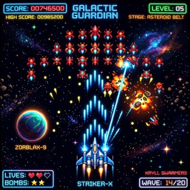

Bagaimana AI Membina Game?
AI seperti Gemini sangat hebat dalam menulis bahasa pengaturcaraan (kod). Anda hanya perlu tahu cara bertanya dengan betul!
Berikan Arahan
Beritahu AI jenis game yang anda mahu (cth: Quiz atau Shooting) dan apa elemen yang mesti ada.
Salin Kod
Gemini akan menjana kod HTML, CSS, dan Javascript. Anda hanya perlu salin kod tersebut.
Simpan & Main
Gunakan Notepad untuk menukar kod menjadi fail game yang sebenar.
Panduan Penting: Cara Simpan Fail
- Apabila klik Save As, pastikan anda pilih "All Files (*.*)" dalam kotak "Save as type".
-
Taip nama fail dengan hujung .html (Contoh:
mygame.html). - Klik dua kali pada fail tersebut untuk membukanya dalam pelayar (Chrome/Edge).
Perpustakaan Prompt
Game Kuiz Sains
Sesuai untuk menguji kefahaman kawan-kawan tentang topik Sains.
"Bina satu game kuiz interaktif menggunakan HTML, CSS dan JS. Topik: 'Sistem Suria'. Pastikan ada 5 soalan, markah dikira di akhir kuiz, dan butang 'Mula Semula'. Gunakan warna tema angkasa lepas yang cantik."
Pengembaraan Teks
Bina cerita di mana pemain boleh memilih jalan cerita mereka sendiri.
"Hasilkan game pengembaraan teks (Choice-based) bertema 'Hutan Misteri'. Pemain perlu membuat pilihan (A atau B) untuk terus hidup. Sekali-sekala ada raksasa muncul. Gunakan gaya penulisan yang suspen."
Cara Mengubah
Game Anda
Jika game yang dijana AI masih belum sempurna, jangan risau! Berikan arahan susulan (follow-up) untuk menambah baik game tersebut.
Shooting Game Master Prompt
"Salin prompt berkuasa tinggi ini dan tampalkan ke dalam Gemini untuk menghasilkan Space Shooting Game yang lengkap:"
"Tulis kod HTML tunggal (termasuk CSS dan JS) untuk game 'Space Shooter'. 1. Karakter pemain adalah sebuah kapal angkasa (segi tiga biru) yang digerakkan menggunakan butang Arrow kiri/kanan. 2. Pemain boleh menembak peluru menggunakan bar Space. 3. Musuh (kotak merah) jatuh dari atas secara rawak. 4. Jika peluru kena musuh, markah bertambah. 5. Jika musuh kena kapal pemain, 'Game Over' dipaparkan. Pastikan kod ini bersih dan boleh dijalankan dalam pelayar."
Contoh Hasil Projek
Ini adalah rupa game yang dihasilkan menggunakan Master Prompt di atas.

Space Shooter v1.0
Game ini mempunyai sistem markah, pergerakan kapal yang lancar, dan musuh yang bertambah pantas.